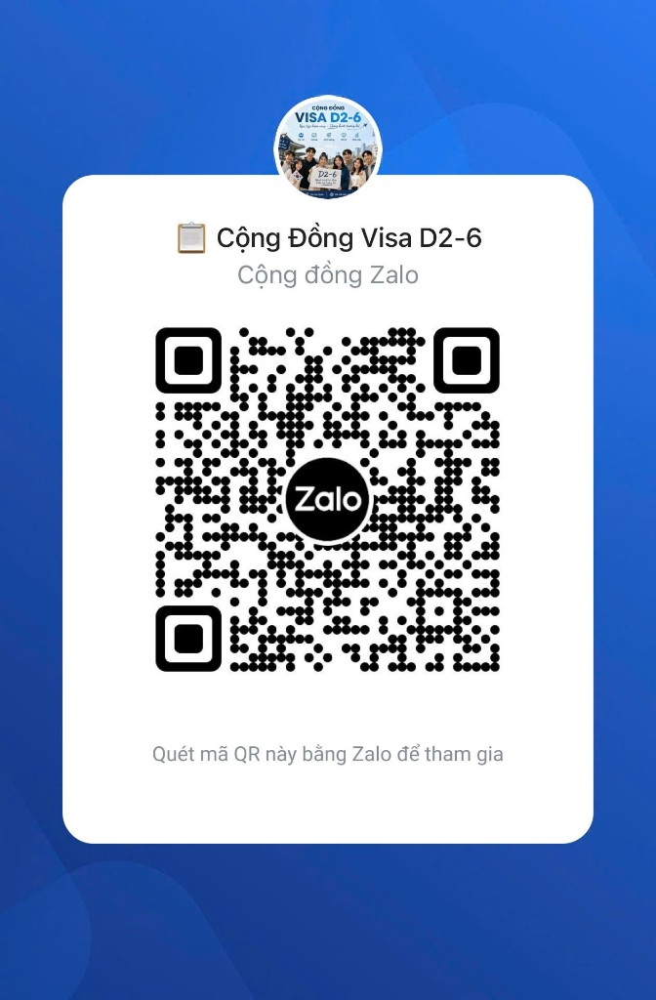

Cẩm nang Visa D2-6
Lộ trình chọn trường và chuẩn bị hồ sơ
Phiên bản tóm tắt giúp học sinh hiểu nhanh điều kiện, giấy tờ, cách chọn trường và các rủi ro cần kiểm tra trước khi nộp hồ sơ.
Cẩm nang Visa D2-6
Phiên bản tóm tắt giúp học sinh hiểu nhanh điều kiện, giấy tờ, cách chọn trường và các rủi ro cần kiểm tra trước khi nộp hồ sơ.
Quét mã QR hoặc tham gia nhóm để nhận thêm thông tin tuyển sinh

Quét mã QR bằng ứng dụng Zalo trên điện thoại